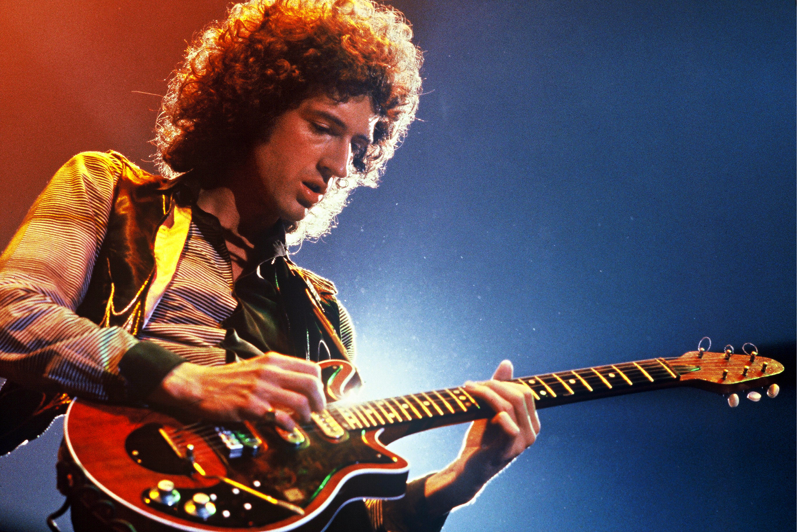

Data:
Ati petrecut 0 min pe site
Rock music is a broad genre of popular music that originated as "rock and roll" in the United States in the early 1950s, and developed into a range of different styles in the 1960s and later, particularly in the United Kingdom and in the United States.[1][2] It has its roots in 1940s and 1950s rock and roll, a style which drew heavily on the African-American genres of blues and rhythm and blues, and from country music. Rock music also drew strongly on a number of other genres such as electric blues and folk, and incorporated influences from jazz, classical and other musical styles. Musically, rock has centered on the electric guitar, usually as part of a rock group with electric bass and drums and one or more singers.
Folk music includes both traditional music and the genre that evolved from it during the 20th century folk revival. The term originated in the 19th century, but is often applied to music older than that. Some types of folk music are also called world music. Traditional folk music has been defined in several ways: as music transmitted orally, music with unknown composers, or music performed by custom over a long period of time. It has been contrasted with commercial and classical styles.
Pop music is a genre of popular music that originated in its modern form in the United States and United Kingdom during the mid-1950s.[4] The terms "popular music" and "pop music" are often used interchangeably, although the former describes all music that is popular and includes many different styles. "Pop" and "rock" were roughly synonymous terms until the late 1960s, when they became increasingly differentiated from each other.
Brian May is the guitarist for a little band called Queen. And he has a Ph.D. in astrophysics. May studied physics and mathematics at Imperial College London and was in the process of getting his Ph.D. when Queen hit it big. Thirty years later, in 2007, he completed his dissertation. Let's try something fun!
